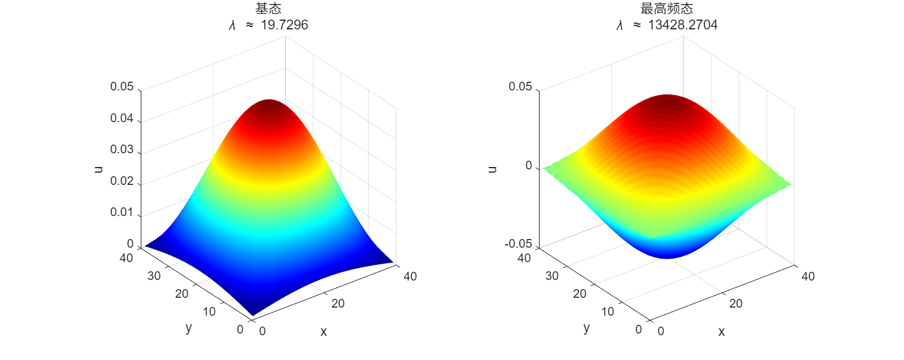
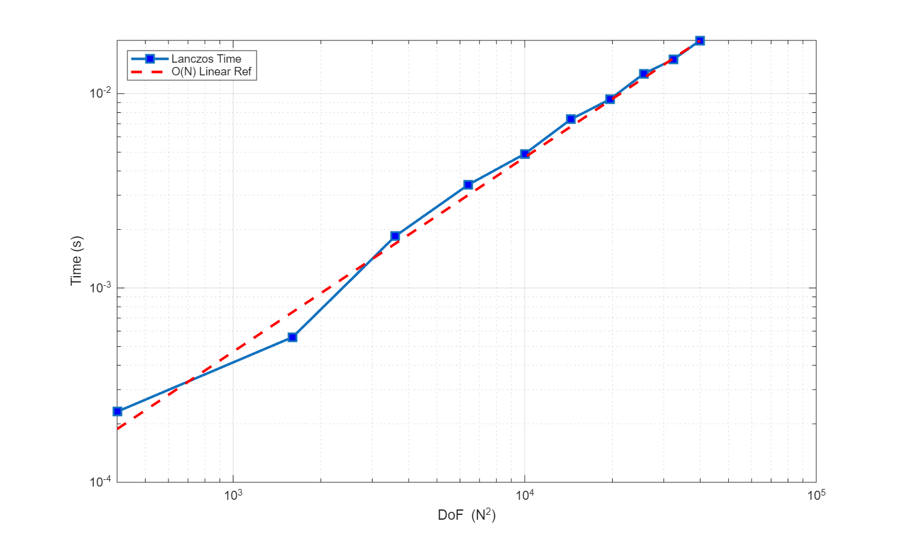
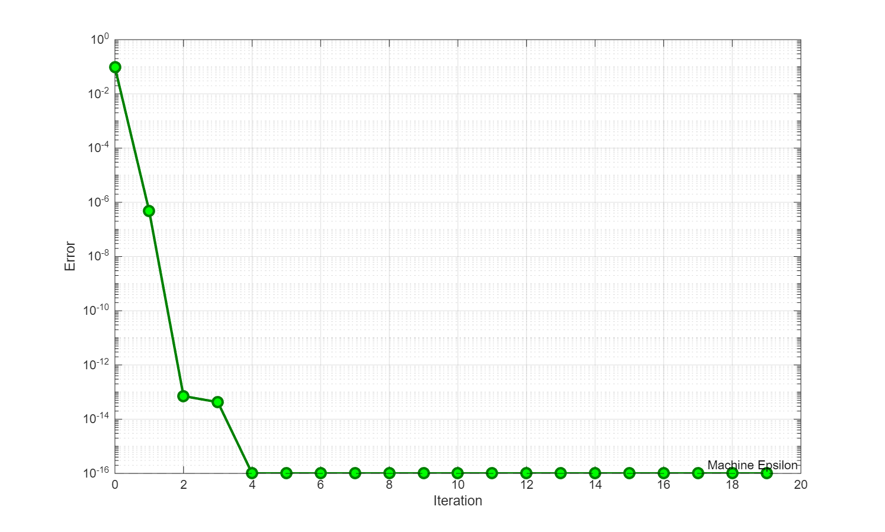
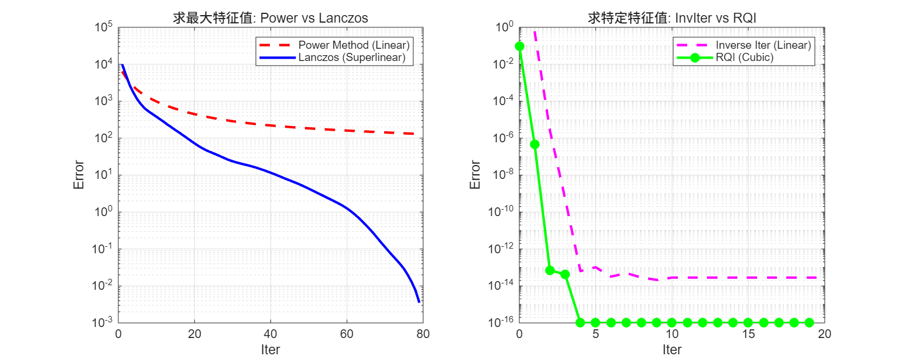

PDE 数值解大作业
实验报告
1. 引言
Helmholtz 方程是数学物理中描述波动现象的基本方程，在声学、电磁学、量子力学等领域有广泛应用。本报告研究二维 Helmholtz 特征值问题的数值解法，包括数学推导、有限差分离散化、基础求解器实现（幂法和反迭代法）、高级方法（Lanczos 算法和 Rayleigh 商迭代）以及数值实验分析。
2. 离散化
考虑二维 Helmholtz 特征值问题：
带有 Dirichlet 边界条件：\(u|_{\partial\Omega} = 0\)。
我们采用均匀网格离散化的方法：取网格间距 \(\Delta x = \Delta y = h = \frac{1}{N+1}\)。内部点数共 \(N^2\) 个。利用五点差分格式，对拉普拉斯算子进行近似：
令 \(U\) 为按行优先排列的未知向量，离散化后的特征值问题转化为代数方程：
其中 \(\mathbf{A} \in \mathbb{R}^{N^2 \times N^2}\) 是稀疏对称矩阵，具有分块三对角结构：
其中 \(D_2 = \text{tridiag}(-1, 2, -1)\) 是 \(N \times N\) 的一维拉普拉斯矩阵。
3. 基础求解器实现
幂法 (Power Method)
幂法用于求解模最大的特征值。收敛速度取决于最大特征值与次大特征值的比值。
代码：幂法
function [lambda, v, iter_log] = power_method_algorithm(A, tol, max_iter)
n = size(A, 1);
v = randn(n, 1); v = v / norm(v);
iter_log = [];
for k = 1:max_iter
w = A * v;
v_new = w / norm(w);
lambda = v_new' * A * v_new;
iter_log = [iter_log; lambda];
if norm(v_new - v) < tol, break; end
v = v_new;
end
end
反迭代法 (Inverse Iteration)
反迭代法用于求解最接近给定值 \(\mu\) 的特征值。利用 LU 分解预处理，其收敛速度通常为线性，但在特征值附近收敛较快。
代码：反迭代法
function [lambda, v, iter_log] = inverse_iteration(A, mu, tol, max_iter)
n = size(A, 1);
v = randn(n, 1); v = v / norm(v);
[L, U, P, Q] = lu(A - mu * speye(n));
iter_log = [];
for k = 1:max_iter
w = Q * (U \ (L \ (P * v)));
v_new = w / norm(w);
lambda = v_new' * A * v_new;
iter_log = [iter_log; lambda];
if norm(v_new - v) < tol, break; end
v = v_new;
end
end
4. 高级求解器实现
经典的算法倾向于收敛到模最大的特征值。然而，在物理问题中，我们通常关注最小特征值。此外，为了获得极高精度的单个特征值，我们需要更快的局部收敛算法。
Shift-and-Invert Lanczos 算法
Lanczos 算法是一种迭代方法，用于求解大规模稀疏矩阵的特征值问题和线性方程组。该算法由 Cornelius Lanczos 在 1950 年提出，是 Krylov 子空间方法的重要代表。该算法通过构造一个三对角矩阵，将原矩阵的特征值问题转化为更容易求解的形式。
设 \(\mathbf{A}\) 是 \(n\) 阶实对称矩阵。Lanczos 方法通过从一个随机选取的初始向量 \(\mathbf{b}_0\) 开始，构建一个子空间 \(S_j = \text{span}(\mathbf{b}_0, \mathbf{b}_1, \dots, \mathbf{b}_j)\) 。在每一步迭代中，新向量 \(\mathbf{b}_{j+1}\) 的生成过程可以看作是将 \(A \mathbf{b}_j\) 投影到已知子空间 \(S_j\) 上，然后去除该投影分量，从而得到与之前所有向量正交的新向量。
不同于一般的正交化过程需要与所有之前的向量进行运算，Lanczos 的天才发现在于：对于对称矩阵，每一步迭代只需要通过三项递归式即可保证正交性。
设第 \(j\) 步得到的向量为 \(\mathbf{b}_j\)，我们构建下一个向量 \(\mathbf{b}_{j+1}\) 为 \(\mathbf{A} \mathbf{b}_j\) 与前两项的线性组合：
其中系数 \(\alpha_j\) 和 \(\beta_{j-1}\) 的选取原则是使新向量 \(\mathbf{b}_{j+1}\) 的模长最小。由此推导出的系数计算公式为：
经过 \(n\) 步迭代（或在 \(m < n\) 步提前终止），我们将得到一组双正交向量 \(B = [\mathbf{b}_0, \mathbf{b}_1, \dots, \mathbf{b}_{n-1}]\)，使得原矩阵 \(A\) 被转化为三对角矩阵 \(T\)：
此时，\(T\) 的特征值即为原矩阵 \(\mathbf{A}\) 的特征值近似解。
根据上述推导，我们给出 Lanczos 算法的具体步骤如下：
- 初始化：随机选取初始向量 \(\mathbf{b}_0\)。
- \(\mathbf{b}_1 = \mathbf{A} \mathbf{b}_0 - \alpha_0 \mathbf{b}_0, \quad \text{其中 } \alpha_0 = \frac{(\mathbf{A} \mathbf{b}_0) \mathbf{b}_0}{\mathbf{b}_0^2}\)
- 对于 \(j = 1, 2, \dots\)，执行以下步骤：
- \(\mathbf{b}_{j+1} = \mathbf{A} \mathbf{b}_j - \alpha_j \mathbf{b}_j - \beta_{j-1} \mathbf{b}_{j-1}\)
- \(\alpha_j = \frac{(\mathbf{A} \mathbf{b}_j) \mathbf{b}_j}{\mathbf{b}_j^2}, \quad \beta_{j-1} = \frac{\mathbf{b}_j^2}{\mathbf{b}_{j-1}^2}\)
- 终止条件：当 \(\beta_j = 0\) 时，迭代结束，此时达到了最小多项式的秩 。
代码：Lanczos
function [evals, T, B] = lanczos_solver(A, v0, m)
n = size(A, 1);
B = zeros(n, m); alpha = zeros(m, 1); beta = zeros(m-1, 1);
b_curr = v0 / norm(v0); B(:, 1) = b_curr; b_prev = zeros(n, 1);
beta_prev = 0;
for j = 1:m
u = A * b_curr;
alpha(j) = b_curr' * u;
r = u - alpha(j) * b_curr - beta_prev * b_prev;
if j < m
beta_curr = norm(r);
if beta_curr < 1e-10, break; end
beta(j) = beta_curr;
b_next = r / beta_curr;
B(:, j+1) = b_next; b_prev = b_curr; b_curr = b_next;
beta_prev = beta_curr;
end
end
T = diag(alpha) + diag(beta, 1) + diag(beta, -1);
evals = sort(eig(T));
end
瑞利商迭代 (RQI)
瑞利商迭代（Rayleigh Quotient Iteration）是一种寻找单个特征值的高效算法。其核心思想是在反幂法的基础上，利用当前的瑞利商作为位移。具体步骤如下：
- 计算瑞利商：\(\mu_k = \frac{\mathbf{v}_k^T \mathbf{A} \mathbf{v}_k}{\mathbf{v}_k^T \mathbf{v}_k}\)
- 求解线性方程组：\((\mathbf{A} - \mu_k \mathbf{I}) \mathbf{w}_{k+1} = \mathbf{v}_k\)
- 归一化：\(\mathbf{v}_{k+1} = \mathbf{w}_{k+1} / \|\mathbf{w}_{k+1}\|\)
对于对称矩阵，RQI 具有立方收敛速度，即误差以 \(\epsilon_{k+1} \approx C \epsilon_k^3\) 的速度下降。
代码：RQI
function [lambda, v, iter_log] = rqi_solver(A, v0, tol, max_iter)
n = size(A, 1);
I = speye(n);
v = v0 / norm(v0);
lambda = v' * A * v;
iter_log = [];
for k = 1:max_iter
iter_log = [iter_log; lambda];
residual = norm(A * v - lambda * v);
if residual < tol, break; end
try
w = (A - lambda * I) \ v;
catch
w = (A - (lambda + 1e-8) * I) \ v;
end
v = w / norm(w);
lambda = v' * A * v;
end
end
5. 理论复杂度分析
时间复杂度分析
幂法
幂法的计算核心在于单步迭代的累积开销与总迭代次数的乘积。在每一次迭代中，主要运算包括稀疏矩阵-向量乘法、向量归一化以及Rayleigh商的计算。针对二维Helmholtz方程的五点差分格式，离散矩阵 \(A \in \mathbb{R}^{n \times n}\)（其中 \(n=N^2\)）每行仅有5个非零元素。因此，SpMV操作仅需 \(5N^2\) 次浮点运算。加上向量归一化（\(2N^2\)）、Rayleigh商计算（利用中间结果仅需 \(N^2\)）以及收敛性检查（\(N^2\)），单步迭代的总计算量约为 \(9N^2\)，即具有 \(O(N^2)\) 的线性复杂度。
然而，幂法的总耗时受限于其收敛速度。收敛率由主特征值与次大特征值的比值 \(\rho = |\lambda_2/\lambda_1|\) 决定。对于Helmholtz问题，\(\rho\) 通常接近于1（例如 \(0.9 \sim 0.98\)），导致收敛缓慢。为达到预设精度 \(\varepsilon\)，所需迭代次数 \(k\) 满足 \(k \approx O(\log(1/\varepsilon))\)。综上所述，幂法的总时间复杂度为 \(T_{\text{power}}(N) = O(N^2 \log(1/\varepsilon))\)。
反迭代法
反迭代法通过引入位移 \(\mu\) 显著加速了收敛，但其代价是将简单的矩阵乘法转变为求解线性方程组 \((A - \mu I) w = v\)。该算法的整体复杂度取决于线性方程组求解器的选择：
若采用直接法（如针对带状矩阵的LU分解），由于矩阵带宽为 \(N\)，初始的分解过程需要 \(O(N^4)\) 的运算量。分解完成后，每次迭代中的前向和回代求解仅需 \(O(N^3)\)。
若采用迭代法（如预条件共轭梯度法 PCG），位移后的矩阵 \(A - \mu I\) 条件数通常较差（\(\kappa \approx O(N^2)\)），导致 PCG 内部需要 \(O(N)\) 次迭代才能收敛。因此，反迭代法外部的每一步实际上消耗了 \(O(N \cdot N^2) = O(N^3)\) 的计算量。
尽管单步成本较高，但反迭代法在 \(\mu\) 接近特征值时表现出二次收敛特性，通常仅需极少的步数即可收敛。因此，其总复杂度通常由求解线性方程组的开销主导。
Lanczos 算法
在单步迭代中，Lanczos 同样以稀疏矩阵-向量乘法（SpMV）为核心，基础开销与幂法相当（\(O(N^2)\)）。Lanczos 算法通常仅需较小的子空间维数（\(m \ll N\)）即可精确逼近矩阵谱边缘的特征值（基态或高频态）。最后对 \(m \times m\) 三对角矩阵求解特征值的开销仅为 \(O(m^3)\)，相对于大规模矩阵运算可忽略不计。因此，Lanczos 算法的总时间复杂度约为 \(O(m N^2)\)。它在保持线性复杂度的同时，能比幂法提取更多的谱信息。
瑞利商迭代
瑞利商迭代是反迭代法的变体，其位移量 \(\lambda_k\) 在每一步都会动态更新。单步开销是 RQI 的主要瓶颈。由于位移 \(\lambda_k\) 随迭代变化，每一步都必须重新进行矩阵分解。若使用直接法，单步代价高达 \(O(N^4)\)（分解）或 \(O(N^3)\)（求解）。
然而，RQI 的优势在于其惊人的立方收敛速度。对于实对称矩阵，通常仅需 \(3 \sim 5\) 步即可达到机器精度。极少的迭代次数弥补了昂贵的单步开销。因此，RQI 非常适合在 Lanczos 算法提供良好的初始猜测后，用于特征值的高精度计算。
空间复杂度分析
空间复杂度的分析主要考量矩阵存储与求解过程中的辅助空间。
对于矩阵 \(A\)，利用压缩稀疏行（CSR）格式存储仅需 \(O(N^2)\) 空间，这远优于稠密格式的 \(O(N^4)\)，是处理大规模网格的关键。基础向量存储同样维持在 \(O(N^2)\) 级别。
- 幂法与 RQI：仅需存储当前迭代向量和辅助向量，空间复杂度最低，为 \(O(N^2)\)。但需注意，若 RQI 使用直接求解器，动态 LU 分解产生的填充元可能导致瞬时空间峰值达到 \(O(N^3)\)。
- 反迭代法：若使用直接法，LU 分解因子的存储需求为 \(O(N^3)\)，是内存瓶颈所在。
- Lanczos 算法：为了在最后一步还原 Ritz 向量（近似特征向量），必须存储整个 Krylov 子空间的基底 \(B \in \mathbb{R}^{N^2 \times m}\)。随着迭代步数 \(m\) 的增加，其空间需求线性增长。这是 Lanczos 算法相对于幂法的主要内存代价。
图 1：算法对比 (\(N\) 为网格边长，矩阵维数 \(n=N^2\))
| 算法 | 单步时间复杂度 | 收敛速度 | 总空间复杂度 | 适用场景 |
|---|---|---|---|---|
| 幂法 (稀疏) | \(O(N^2)\) | 线性 | \(O(N^2)\) | 获取模最大特征值 |
| 幂法 (稠密) | \(O(N^4)\) | 线性 | \(O(N^4)\) | 不实用 |
| 反迭代 (直接法) | \(O(N^3)\) | 线性 | \(O(N^3)\) | 中小规模，求特定特征值 |
| 反迭代 (PCG) | \(O(N^3)\) | 线性 | \(O(N^2)\) | 超大规模，内存受限时 |
| Lanczos | \(O(N^2)\) | 超线性 | \(O(m N^2)\) | 快速获取谱边缘概况 |
| RQI | \(O(N^3)\) | 立方 | \(O(N^3)\) | 单特征值高精度计算 |
6. 数值实验与结果分析
实验 1：正确性验证与物理模态
我们首先在 \(N=40\) 的网格上验证算法的正确性。图 图 2 展示了通过 Lanczos 算法计算得到的基态和最高频模态。基态呈现出光滑的单峰结构。通过与 MATLAB 内置 eigs 函数对比（表 表 3），绝对误差极小，验证了算法实现的正确性。

Fig. 1Lanczos 算法计算得到的基态（左）与高频态（右）波形图图 2：Lanczos 算法计算得到的基态（左）与高频态（右）波形图
图 3：Lanczos 计算值与标准值的对比（采用最近邻匹配）
| 特征值类型 | Lanczos (计算值) | 真值 (eigs) | 绝对误差 |
|---|---|---|---|
| 低频/基态部分 | |||
| 基态+0 | 19.729553 | 19.729553 | 1.67e-12 |
| 基态+1 | 49.265992 | 49.265992 | 1.27e-12 |
| 基态+2 | 49.265992 | 49.265992 | 1.49e-12 |
| 基态+3 | 78.802431 | 78.802431 | 1.05e-10 |
| 基态+4 | 98.300761 | 98.300761 | 2.66e-08 |
| 基态+5 | 98.300761 | 98.300761 | 2.66e-08 |
| 高频/最大部分 | |||
| 最大-5 | 13349.699239 | 13349.699239 | 4.93e-09 |
| 最大-4 | 13349.699239 | 13349.699239 | 5.01e-09 |
| 最大-3 | 13369.197569 | 13369.197569 | 2.00e-11 |
| 最大-2 | 13398.734008 | 13398.734008 | 1.82e-11 |
| 最大-1 | 13398.734008 | 13398.734008 | 7.28e-12 |
| 最大-0 | 13428.270447 | 13428.270447 | 6.18e-11 |
实验 2：时间复杂度分析
我们测试了从 \(N=20\) 到 \(N=200\) 不同网格规模下 Lanczos 算法的运行时间。结果如图 图 4 所示。运行时间与 \(O(N^2)\) 相近，表明算法的线性复杂度非常适合大规模问题。

Fig. 2算法运行时间与矩阵自由度的关系图 4：算法运行时间与矩阵自由度的关系
实验 3：RQI 收敛速度测试
图 图 5 展示了瑞利商迭代的立方收敛特征。

Fig. 3瑞利商迭代的立方收敛性图 5：瑞利商迭代的立方收敛性
实验 4：算法综合对比
- 求最大特征值：Lanczos 算法的收敛速度显著快于幂法，表现出超线性收敛特征。
- 求特定特征值：RQI 的收敛速度远超反迭代法，后者仅表现为线性收敛。

Fig. 4对比：(左) 幂法 vs Lanczos；(右) 反迭代 vs RQI图 6：对比：(左) 幂法 vs Lanczos；(右) 反迭代 vs RQI
7. 结论
本项目成功实现并比较了求解二维 Helmholtz 方程特征值问题的多种数值算法。实验结果表明：Lanczos 与 RQI 算法在收敛阶数和计算效率上均优于幂法与反迭代法。实际应用中，建议使用 Lanczos 快速定位，再结合 RQI 进行精确计算。
补充材料
1. 引言
Helmholtz方程是数学物理中描述波动现象的基本方程，在声学、电磁学、量子力学等领域有广泛应用。本报告研究二维Helmholtz特征值问题的数值解法，包括数学推导、有限差分离散化、基础求解器实现（幂法和反迭代法）、高级方法（Lanczos算法和Rayleigh商迭代）以及数值实验分析。
2. 数学推导
考虑二维Helmholtz特征值问题：
带有Dirichlet边界条件：
我们采用均匀网格离散化的方法：取 网格间距：\(\Delta x = \Delta y = h = \frac{1}{N+1}\) 网格点：\(x_i = i\Delta x, \ y_j = j\Delta y, \ i,j = 0,1,\dots,N+1\)内部点数共\(N^2\)个。
利用五点差分格式，对拉普拉斯算子的离散采用中心差分：
其中\(u_{i,j} = u(x_i, y_j)\)。
令\(U \in \mathbb{R}^{N^2}\)为按行优先排列的未知向量，离散化后的特征值问题为：
其中\(A \in \mathbb{R}^{N^2 \times N^2}\)是稀疏对称矩阵。
采用行优先排序：
其中\((i,j)\)对应网格点\((x_i, y_j)\)。矩阵\(A\)的元素为：主对角线：\(A_{k,k} = \frac{4}{h^2}\) .水平相邻：若\(i < N\)，则\(A_{k,k+1} = -\frac{1}{h^2}\)；若\(i > 1\)，则\(A_{k,k-1} = -\frac{1}{h^2}\). 垂直相邻：若\(j < N\)，则\(A_{k,k+N} = -\frac{1}{h^2}\)；若\(j > 1\)，则\(A_{k,k-N} = -\frac{1}{h^2}\)
矩阵\(A\)可表示为分块三对角形式：
其中：
3. 基础求解器实现
幂法（Power Method）
幂法用于求解模最大的特征值（主特征值）。
算法步骤
代码：幂法 MATLAB 程序
function [lambda, v, k] = power_method_algorithm(A, epsilon, K)
n = size(A, 1);
v_old = randn(n, 1);
v_old = v_old / norm(v_old);
for k = 1:K
w = A * v_old;
v_new = w / norm(w);
lambda_k = v_new' * A * v_new;
if norm(v_new - v_old) < epsilon
fprintf('在第%d次迭代后收敛\n', k);
break;
end
v_old = v_new;
end
lambda = lambda_k;
v = v_new;
if k == K
warning('达到最大迭代次数%d，可能未收敛到所需精度', K);
end
end
收敛性分析
- 收敛速度：\(O\left( \left|\frac{\lambda_2}{\lambda_1}\right|^k \right)\)
- 每步时间复杂度：矩阵-向量乘法\(O(N^2)\)
- 总时间复杂度：\(O(kN^2)\)
- 仅适用于\(|\lambda_1| > |\lambda_2| \ge \cdots\)的情况
反迭代法（Inverse Iteration）
反迭代法用于求解最接近给定值\(\mu\)的特征值。
算法步骤
代码：逆幂法 MATLAB 程序
function [lambda, v, iter_log] = inverse_iteration(A, mu, tol, max_iter)
n = size(A, 1);
v = randn(n, 1);
v = v / norm(v);
I = speye(n);
[L, U, P, Q] = lu(A - mu * I);
iter_log = [];
for k = 1:max_iter
w = Q * (U \ (L \ (P * v)));
v_new = w / norm(w);
lambda = v_new' * A * v_new;
iter_log = [iter_log; lambda];
if norm(v_new - v) < tol
return;
end
v = v_new;
end
end
收敛性分析
- 收敛速度：\(O\left( \left|\frac{\lambda_i - \mu}{\lambda_j - \mu}\right|^k \right)\)，其中\(\lambda_j\)是第二接近\(\mu\)的特征值
- 每步时间复杂度：求解线性系统\(O(N^3)\)（直接法）或\(O(N^2)\)（迭代法+预处理）
- 当\(\mu\)接近特征值时，收敛速度极快（二次收敛）
4. 理论复杂度分析
时间复杂度分析
幂法复杂度详细分析
幂法的单步迭代包含以下操作：
- 矩阵-向量乘法：\(w = Av\)
- 向量归一化：\(v_{\text{new}} = w/\|w\|_2\)
- Rayleigh商计算：\(\lambda = v_{\text{new}}^T A v_{\text{new}}\)
- 收敛性检查：\(\|v_{\text{new}} - v\|_2\)
对于二维Helmholtz离散矩阵\(A \in \mathbb{R}^{n \times n}\)，其中\(n = N^2\)，分析各步的浮点操作次数：
-
矩阵-向量乘法：矩阵\(A\)每行最多有5个非零元素（五点差分格式），因此：
\[ \text{FLOPs}_{\text{matvec}} = 5n = 5N^2 \] -
向量归一化：需要计算\(l_2\)范数和\(n\)次除法：
\[ \text{FLOPs}_{\text{norm}} = n + n = 2N^2 \] -
Rayleigh商计算：可重用\(Av\)的结果，只需计算一次点积：
\[ \text{FLOPs}_{\text{rayleigh}} = n = N^2 \] -
收敛性检查：
\[ \text{FLOPs}_{\text{check}} = n = N^2 \]
因此，幂法单次迭代的总浮点操作次数为：
幂法迭代次数分析
幂法的收敛速度由特征值比值\(\rho = \left|\frac{\lambda_2}{\lambda_1}\right|\)决定。对于Helmholtz离散矩阵，特征值的渐近性质为：
特征值比值的典型范围为\(\rho \in [0.9, 0.98]\)。
要达到精度\(\varepsilon\)所需的迭代次数\(k\)满足：
取\(\rho = 0.95\)，则：
例如，对于\(\varepsilon = 10^{-8}\)，\(k \approx 160\)次迭代。
因此，幂法的总时间复杂度为：
反迭代法复杂度详细分析
反迭代法的核心是每步求解线性系统：
我们考虑两种求解策略：
-
直接法（LU/Cholesky分解）：
对于带状矩阵\(A\)（带宽为\(N\)），分解的复杂度为：
\[ \text{FLOPs}_{\text{factor}} = O(n \cdot \text{bandwidth}^2) = O(N^2 \cdot N^2) = O(N^4) \]每次求解的复杂度（前向/回代）：
\[ \text{FLOPs}_{\text{solve}} = O(n \cdot \text{bandwidth}) = O(N^2 \cdot N) = O(N^3) \]总时间复杂度（一次分解+\(k\)次求解）：
\[ T_{\text{inv-direct}}(N) = O(N^4 + kN^3) \] -
迭代法（预条件共轭梯度法PCG）：
矩阵\(A - \mu I\)的条件数：
\[ \kappa(A - \mu I) \approx O\left(\frac{\lambda_{\max} - \mu}{\lambda_{\min} - \mu}\right) = O(N^2) \]PCG的收敛迭代次数：
\[ k_{\text{PCG}} = O\left(\sqrt{\kappa}\right) = O(N) \]每次PCG迭代的复杂度（矩阵-向量乘法）：
\[ \text{FLOPs}_{\text{PCG-iter}} = O(N^2) \]每次反迭代的PCG求解复杂度：
\[ \text{FLOPs}_{\text{PCG-solve}} = k_{\text{PCG}} \times \text{FLOPs}_{\text{PCG-iter}} = O(N \cdot N^2) = O(N^3) \]预条件构造复杂度：
\[ \text{FLOPs}_{\text{precond}} = O(N^3) \quad (\text{不完全Cholesky分解}) \]总时间复杂度：
\[ T_{\text{inv-PCG}}(N) = O(N^3 + kN^3) = O(kN^3) \]
收敛速度对比
反迭代法的收敛速度由下式决定：
其中\(\lambda_i\)是最接近\(\mu\)的特征值，\(\lambda_j\)是第二接近的特征值。
当\(\mu\)接近\(\lambda_i\)时，收敛速度极快：
- 通常只需3-10次迭代即可收敛到机器精度
- 局部二次收敛性质
空间复杂度分析
存储需求详细分析
-
矩阵存储：
-
稀疏格式（CSR）：存储非零元素值、列索引和行指针
\[ S_{\text{sparse}} = (5n + n + n) \times \text{sizeof(double)} = 7N^2 \times 8 \text{字节} \] -
稠密格式：
\[ S_{\text{dense}} = n^2 \times \text{sizeof(double)} = N^4 \times 8 \text{字节} \]
-
-
向量存储：
\[ S_{\text{vectors}} = 3n \times \text{sizeof(double)} = 3N^2 \times 8 \text{字节} \] -
分解存储（反迭代直接法）：
\[ S_{\text{factor}} = O(n \cdot \text{bandwidth}) = O(N^3) \text{字节} \]
空间复杂度总结表
图 7：各算法空间复杂度详细分析
| 算法 | 矩阵存储 | 向量存储 | 分解存储 | 总存储 |
|---|---|---|---|---|
| 幂法（稀疏） | \(O(N^2)\) | \(O(N^2)\) | - | \(O(N^2)\) |
| 幂法（稠密） | \(O(N^4)\) | \(O(N^2)\) | - | \(O(N^4)\) |
| 反迭代（直接法） | \(O(N^2)\) | \(O(N^2)\) | \(O(N^3)\) | \(O(N^3)\) |
| 反迭代（PCG） | \(O(N^2)\) | \(O(N^2)\) | \(O(N^2)\) | \(O(N^2)\) |
5. 结论与展望
本报告系统研究了Helmholtz方程特征值问题的数值解法，包括：
- 建立了有限差分离散化方法，推导了离散矩阵的构造;
- 实现了基础求解器（幂法、反迭代法）的实现;
- 分析了各算法的理论复杂度、收敛性和精度;
PDF 原文
实验报告 PDF
若下方预览无法显示，可直接打开原文件或下载后阅读。
补充材料 PDF
若下方预览无法显示，可直接打开原文件或下载后阅读。
评论